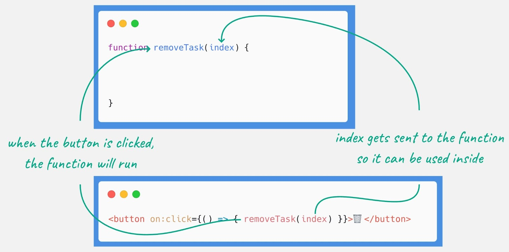
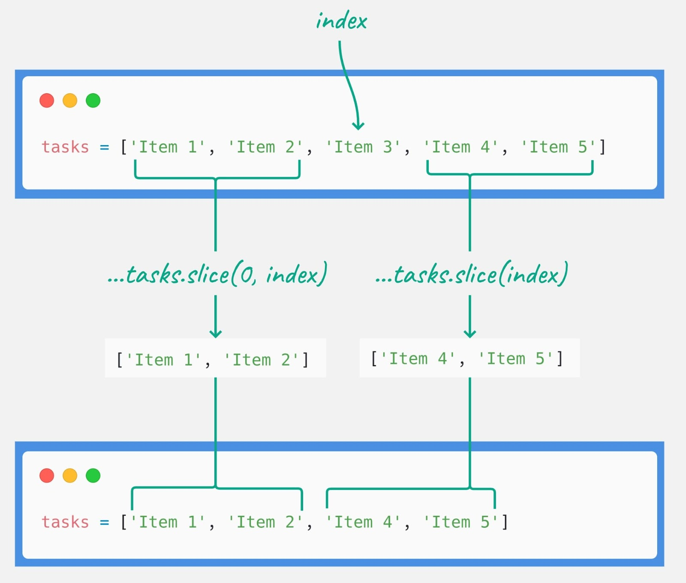
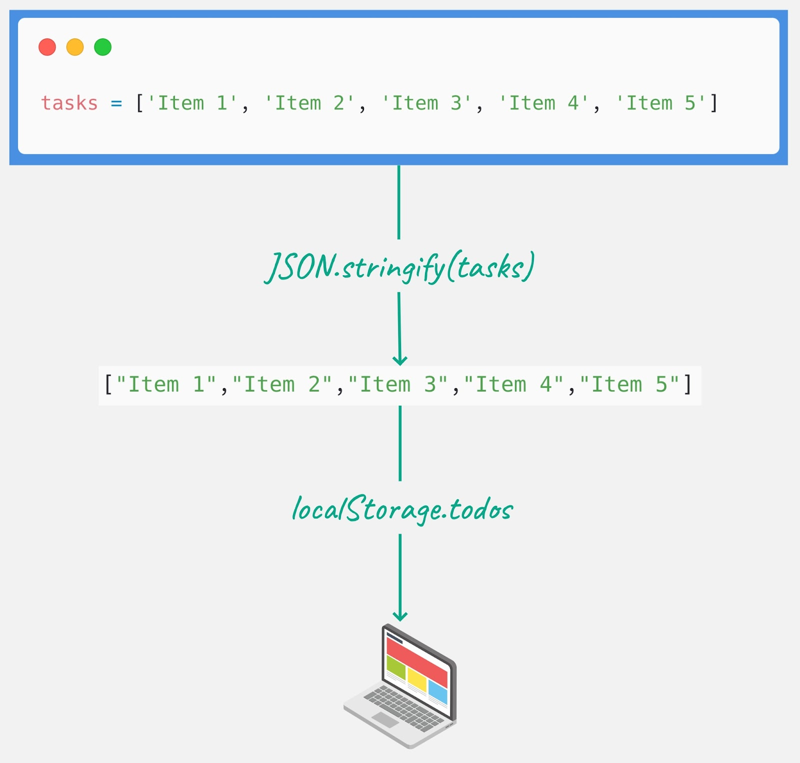
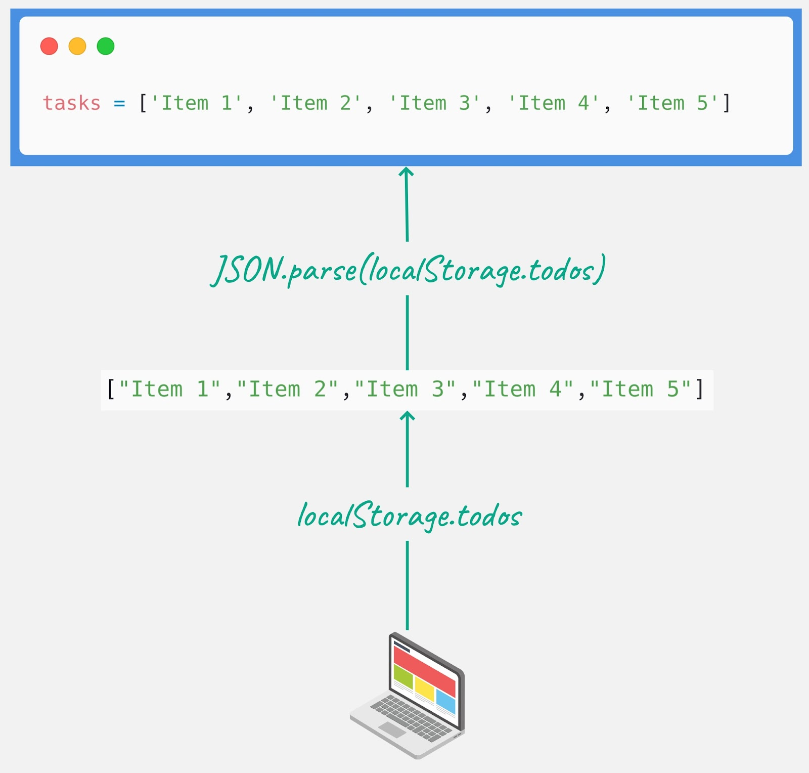

In this tutorial, we will build a simple ToDo list app using SvelteKit.
{#each} blocks to iterate over the tasks and display them.Command + Shift + A on MacOS or Ctrl + Shift + A on Windows)Ctrl + `npm installnpm run devNow you're ready to get coding!
In the script tag on your landing page (+page.svelte), define an array to hold the tasks and a function to add new tasks.
The following two code blocks do exactly the same thing. The first one has each step written line-by-line to make it easier to follow. The second one combines some steps into a single line.
<script>
let tasks = []
function addTask() {
const oldTasks = tasks
const newTask = ''
tasks = [...oldTasks, newTask]
}
</script>or...
<script>
let tasks = []
function addTask() {
tasks = [...tasks, '']
}
</script>tasks is an array that will hold the list of tasks.addTask is a function that adds a new empty string to the tasks array whenever it is called....tasks) to create a new array that includes all existing tasks and adds an empty string at the end. This new array overwrites the old one.Create a button that, when clicked, will call the addTask function to add a new task.
<button on:click={addTask}>📝 Add</button>on:click={addTask} attaches a click handler to the button that calls the addTask function.{#each} Block to Display TasksUse the {#each} block to iterate over the tasks array and render an input for each task. Bind the value of each input to the corresponding task in the array.
{#each tasks as task, index}
<div class="task">
<input bind:value={tasks[index]}>
</div>
{/each}{#each tasks as task, index} iterates over the tasks array, providing the task and its index.input bind:value={tasks[index]} binds the value of the input to the corresponding task in the tasks array, allowing for real-time updates.Add some basic CSS to style the tasks.
<style>
.task {
display: block;
}
</style>.task class ensures each task input is displayed one below the other.]
You should test and solidify your understanding of this section.
In this part, we'll extend the simple ToDo list application by adding a feature to remove tasks. You'll learn how to remove items from an array and ensure the page updates.
<button on:click={() => { removeTask(index) }}>🗑</button>on:click={ }: This listens for a click on the button.() => { removeTask(index) }: This calls the removeTask function and sends the current index as its argument when the button is clicked.index variable comes from the {#each tasks as task, index} block that iterates over the tasks array. It represents the position of the current task in the array.index to the removeTask function, the correct task can be identified and removed from the tasks array.
removeTask FunctionThe following two code blocks do exactly the same thing. The first one has each step written line-by-line to make it easier to follow. The second one combines some steps into a single line.
function removeTask(index) {
const firstPart = tasks.slice(0, index)
const secondPart = tasks.slice(index + 1)
tasks = [
...firstPart,
...secondPart
]
}or...
function removeTask(index) {
tasks = [
...tasks.slice(0, index),
...tasks.slice(index + 1)
]
}removeTask function takes the index as its argument. This index represents the position of the task in the tasks array that needs to be removed. If the function didn't get this, it wouldn't know which task to remove.slice and Spread Syntax:tasks.slice(0, index): This part of the code creates a new array that includes all elements from the start of the tasks array up to (but not including) the element at index.tasks.slice(index + 1): This part creates a new array that includes all elements from the element immediately after index to the end of the tasks array.[...tasks.slice(0, index), ...tasks.slice(index + 1)]: The spread syntax (...) is used to concatenate these two arrays, basically creating a new array out of the old one, but leaving out the element at index.tasks Array:tasks array.
For the next iteration, we introduce a feature to save the Todo list tasks to the browser's local storage. This means the tasks are saved even if the page is reloaded or the browser is closed and reopened. It's a more robust and user-friendly experience, because user's tasks are not lost when they navigate away from the page or close their browser.
The following two code blocks do exactly the same thing. The first one has each step written line-by-line to make it easier to follow. The second one combines some steps into a single line.
function saveTasks() {
const tasksAsJSON = JSON.stringify(tasks)
localStorage.todos = tasksAsJSON
}or...
function saveTasks() {
localStorage.todos = JSON.stringify(tasks)
}localStorage:localStorage is an API that allows you to store key-value pairs in a web browser. Data stored in localStorage has no expiration time, meaning it will stay until it's deleted.JSON.stringify(tasks): The tasks array, which is a JavaScript object, is converted to a JSON string.tasks array to a JSON string is necessary because localStorage can only store strings.localStorage.todos = JSON.stringify(tasks): The JSON string representation of the tasks array is stored in localStorage under the key todos.tasks array is saved as a string in the browser's local storage and can be retrieved later.
Create a button that will save your tasks. An appropriate icon might be the floppy disk (💾).
It would be nice for the app to automatically save the list every time it changes. Remove the save button and instead, save after every change to the list.
Now we introduce a feature to load the Todo list tasks from the browser's local storage to allow the tasks to be retrieved and displayed when the user revisits the page.
The loadTasks function allows the tasks to be loaded from local storage. It retrieves the JSON string representing the tasks, parses it into a JavaScript array, and overwrites the tasks array with this data.
The following two code blocks do exactly the same thing. The first one has each step written line-by-line to make it easier to follow. The second one combines some steps into a single line.
function loadTasks() {
const tasksAsJSON = localStorage.todos
const tasksAsArray = JSON.parse(tasksAsJSON)
tasks = tasksAsArray
}or...
function loadTasks() {
tasks = JSON.parse(localStorage.todos)
}localStorage:localStorage.todos: This gets the value stored in localStorage under the key todos. This is the JSON string that was previously saved by the saveTasks function.JSON.parse(localStorage.todos): The JSON.parse function converts the JSON string back into the array of tasks.tasks = JSON.parse(localStorage.todos): This overwrites the tasks array with the tasks that were previously saved.
Create a button that will load your tasks. An appropriate icon might be the satellite antenna ( 📡 ).
It would be nice if we didn't accidentally load a list when we aren't ready, and lose all our items. Add a confirmation dialog to check if the user really wants to load.
The app is useful as it is, and you could release it as an app. This would be what's called an MVP, or Minimum Viable Product. It's the most basic form of the app that is useful to the user.
However, we can take this project further.